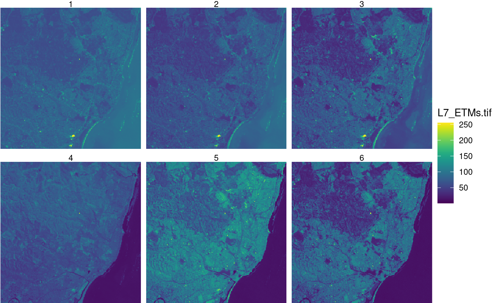

This vignette shows how some of the tidyverse verbs can be used on stars objects.
The stars and tidyverse packages are loaded by
library(stars) ## Loading required package: abind ## Loading required package: sf ## Linking to GEOS 3.7.1, GDAL 2.2.3, PROJ 4.9.3 library(dplyr) ## ## Attaching package: 'dplyr' ## The following objects are masked from 'package:stats': ## ## filter, lag ## The following objects are masked from 'package:base': ## ## intersect, setdiff, setequal, union
Methods now available for class stars are
methods(class = "stars") ## [1] [ [<- $<- adrop ## [5] aggregate aperm as_tibble as.data.frame ## [9] c coerce contour cut ## [13] dim dimnames dimnames<- droplevels ## [17] filter image initialize is.na ## [21] Math merge mutate Ops ## [25] plot predict print pull ## [29] select show slice slotsFromS3 ## [33] split st_apply st_area st_as_sf ## [37] st_as_sfc st_as_stars st_bbox st_coordinates ## [41] st_crop st_crs st_crs<- st_dimensions ## [45] st_dimensions<- st_extract st_geometry st_interpolate_aw ## [49] st_intersects st_join st_mosaic st_normalize ## [53] st_redimension st_sample st_set_bbox st_transform_proj ## [57] st_transform write_stars ## see '?methods' for accessing help and source code
We will work with a three-band section of a landsat image:
system.file("tif/L7_ETMs.tif", package = "stars") %>% read_stars -> x x ## stars object with 3 dimensions and 1 attribute ## attribute(s): ## L7_ETMs.tif ## Min. : 1.00 ## 1st Qu.: 54.00 ## Median : 69.00 ## Mean : 68.91 ## 3rd Qu.: 86.00 ## Max. :255.00 ## dimension(s): ## from to offset delta refsys point values x/y ## x 1 349 288776 28.5 PROJCS["UTM Zone 25, Sout... FALSE NULL [x] ## y 1 352 9120761 -28.5 PROJCS["UTM Zone 25, Sout... FALSE NULL [y] ## band 1 6 NA NA NA NA NULL
slice
slice slices a sub-array out of the cube; this is done by specifying the dimension on which to act, and the slice number.
x %>% slice(band, 6) -> x6 x6 ## stars object with 2 dimensions and 1 attribute ## attribute(s): ## L7_ETMs.tif ## Min. : 1.00 ## 1st Qu.: 32.00 ## Median : 60.00 ## Mean : 59.98 ## 3rd Qu.: 88.00 ## Max. :255.00 ## dimension(s): ## from to offset delta refsys point values x/y ## x 1 349 288776 28.5 PROJCS["UTM Zone 25, Sout... FALSE NULL [x] ## y 1 352 9120761 -28.5 PROJCS["UTM Zone 25, Sout... FALSE NULL [y]
It returns a lower-dimensional array if a single element is selected along the slice dimension.
filter
Similar to slice, filter selects on dimensions but evaluates their values rather than their index: in
x %>% filter(x > 289000, x < 291000, band > 3) -> x7 x7 ## stars object with 3 dimensions and 1 attribute ## attribute(s): ## L7_ETMs.tif ## Min. : 5.00 ## 1st Qu.: 54.00 ## Median : 70.00 ## Mean : 71.79 ## 3rd Qu.: 88.00 ## Max. :252.00 ## dimension(s): ## from to offset delta refsys point values x/y ## x 1 70 289004 28.5 PROJCS["UTM Zone 25, Sout... FALSE NULL [x] ## y 1 352 9120761 -28.5 PROJCS["UTM Zone 25, Sout... FALSE NULL [y] ## band 1 3 4 1 NA NA NULL
the subarray is created based on the x coordinate values.
Note that filter converts the object to a tbl_cube, and uses the dplyr filter method for tbl_cube objects. This has the limitation that stars objects with rectilinear, curvilinear or simple feature geometries cannot be handled. For such objects, using regular [ selection or using st_crop may be an alternative.
mutate
x %>% mutate(band2 = 2 * L7_ETMs.tif) -> x2 x2 ## stars object with 3 dimensions and 2 attributes ## attribute(s): ## L7_ETMs.tif band2 ## Min. : 1.00 Min. : 2.0 ## 1st Qu.: 54.00 1st Qu.:108.0 ## Median : 69.00 Median :138.0 ## Mean : 68.91 Mean :137.8 ## 3rd Qu.: 86.00 3rd Qu.:172.0 ## Max. :255.00 Max. :510.0 ## dimension(s): ## from to offset delta refsys point values x/y ## x 1 349 288776 28.5 PROJCS["UTM Zone 25, Sout... FALSE NULL [x] ## y 1 352 9120761 -28.5 PROJCS["UTM Zone 25, Sout... FALSE NULL [y] ## band 1 6 NA NA NA NA NULL
select
select selects an attribute, or a set of attributes:
x2 %>% select(band2) -> x9 x9 ## stars object with 3 dimensions and 1 attribute ## attribute(s): ## band2 ## Min. : 2.0 ## 1st Qu.:108.0 ## Median :138.0 ## Mean :137.8 ## 3rd Qu.:172.0 ## Max. :510.0 ## dimension(s): ## from to offset delta refsys point values x/y ## x 1 349 288776 28.5 PROJCS["UTM Zone 25, Sout... FALSE NULL [x] ## y 1 352 9120761 -28.5 PROJCS["UTM Zone 25, Sout... FALSE NULL [y] ## band 1 6 NA NA NA NA NULL
geom_stars
geom_raster is a ggplot2 geom function that accepts stars objects as its data argument and
geom_raster, geom_rect and geom_sf depending on whether the geometry is regular, rectilinear or has vector geometriesAn example use is
library(ggplot2) library(viridis) ## Loading required package: viridisLite ggplot() + geom_stars(data = x) + coord_equal() + facet_wrap(~band) + theme_void() + scale_fill_viridis() + scale_x_discrete(expand = c(0, 0)) + scale_y_discrete(expand = c(0, 0))
